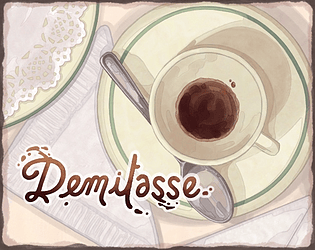

pheap chin 

Demitasse is a memoir played as a narrative puzzle game about a magical perfumer, Pasha Poodl, who uses her memories as ingredients in her craft. When she's prompted to recreate one of her old perfume scents, she struggles to recall the memories due to her extended lifespan. Pasha grounds herself through the Demitasse - French for a half cup. Spending that familiar ritual with her old friend to recall their past together and create the perfume she thought she'd lost.